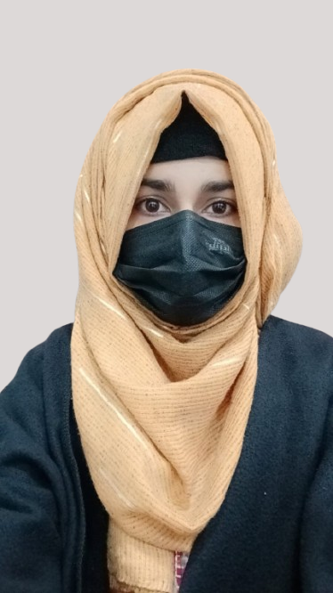

Contact
+92 123 4567890
shakraambreen@gmail.com
House N0-1, Islamabad
State, Country, Pakistan
Technical Skills
Wireframming & Prototyping
HTML5
CSS3
Javascript
Jquery
Bootstrap5
PHP & MY SQL
Adobe Photoshop
Tailwind CSS
Wordpress
Wix website builder
MS Office
Soft Skills
Attentive listening skill
Problem Solving
Communication
Team Work
Adaptability
Languages
English
Urdu
Punjabi
Pushto
Shakra Ambreen
Web Designer | Web Developer | Content Writer
Summary
To join an interactive organization that offers me a constructive workplace where I can apply concepts I learned and gain practical exposure by enhancing and using my creative skills.
Education
Master in Computer Science.
2020 - Nov, 2022Virtual University of Pakistan
Web Design & Development, Data Base Management System.
Bachelor's Degree in Computer Science.
2017 – 2019 University of PunjabObject Oriented Programming, Database, Data Communication
Experience
Wireframming & Prototyping
Balsamiq Wireframming tool
Web Development (Final Year Project)
Online Car Accessories using HTML/CSS/JavaScript/mysql/php